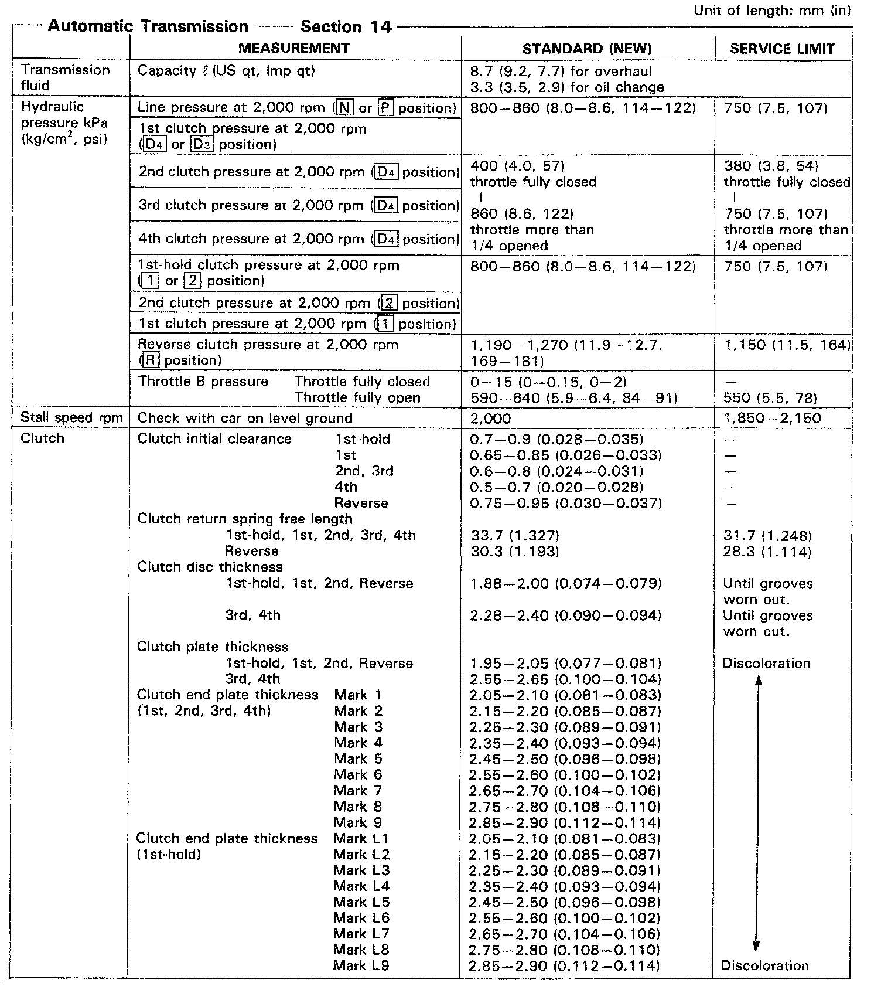
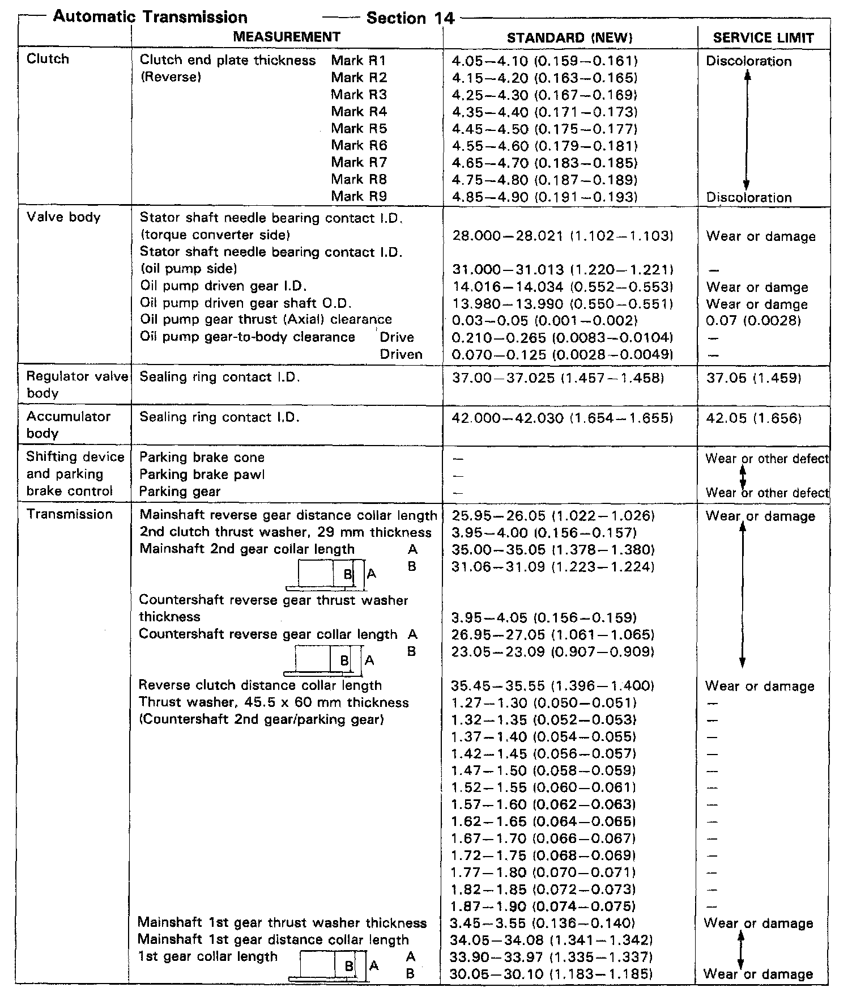
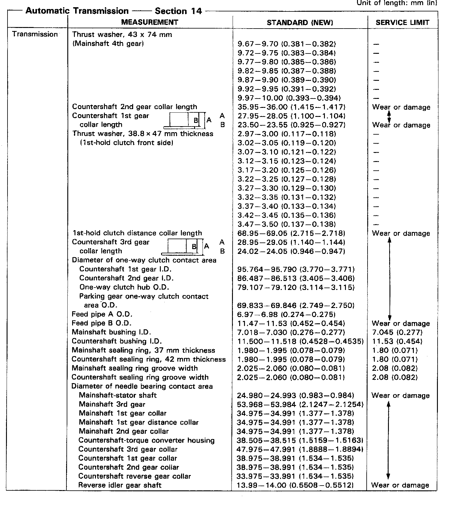
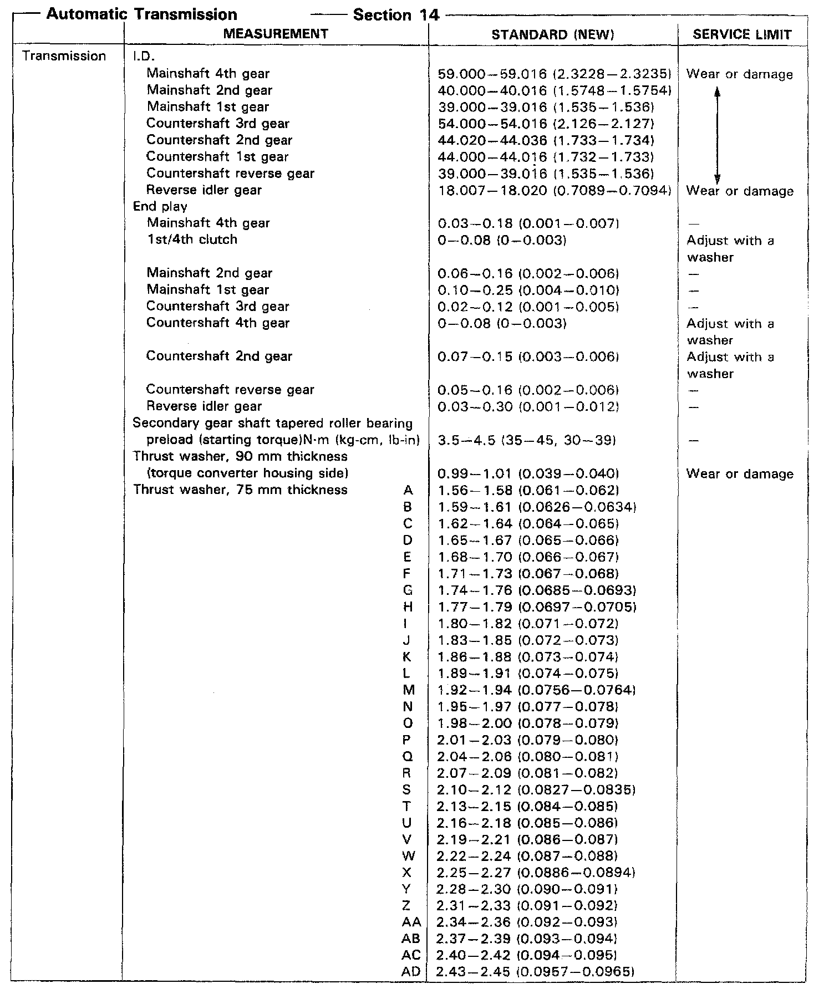
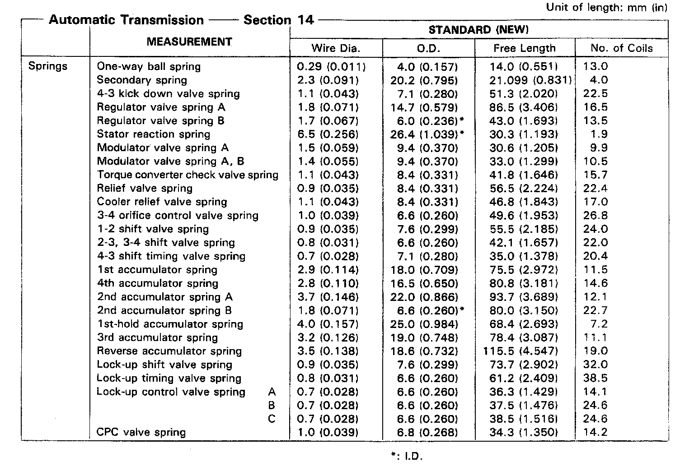
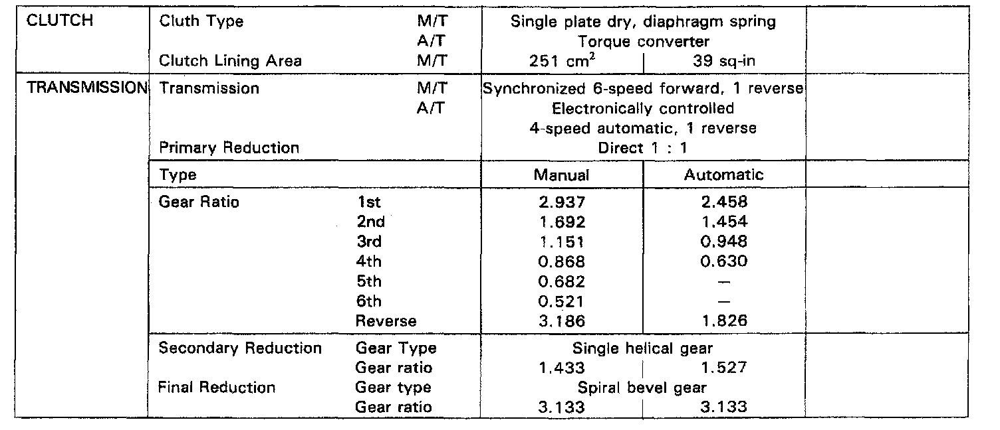

A/T Technical Data
MPYA 4-spd M/T, Line Pressure, Stall Speed & Clutch Clearance:

MPYA 4-spd A/T, Valve Body, Accumulator & Shaft Thickness:

MPYA 4-spd A/T, Mainshaft / Countershaft Measurements:

MPYA 4-spd A/T, Mainshaft / Countershaft End Play & Thickness:

MPYA 4-spd A/T, Transmission Spring Measurements:

Manual/Automatic Transmission Gear Ratios:
